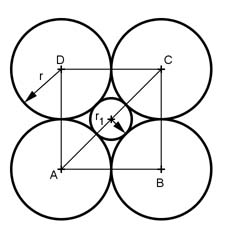

Aufgabe 333 8 Kugeln mit dem Radius r = 5,3 cm sind so angeordnet, dass die Verbindung ihrer Mittel- punkte einen Würfel ergibt. Wie groß ist das Volumen V der 6 Kugeln, deren Mittelpunkte auf den Seitendiagonalen des Würfels liegen und die die umliegenden Kugeln berühren? Wie groß ist das Volumen V1 der Kugel, deren Mittelpunkt der Schnittpunkt der Raumdiagonalen ist und die die umliegenden Kugeln berührt?

Satz von Pythagoras im Dreieck ABC: AC2 = AB2 + BC2 AB = BC = 2 * r AC2 = (2 * r)2 + (2 * r)2 = = 4 * r2 + 4 * r2 = 8 * r2 |√ AC = √8 * r = √8 * 5,3 cm = 15 cm d1 = AC - 2 * r = = 15 cm - 2 * 5,3 cm = 4,4 cm r1 = d1/2 = 4,4 cm/2 = 2,2 cm 4 * л * r13 V = 6 * ------------- = 3 4 * л * 2,23 = 6 * -------------- cm3 = 267,5 cm3 3 Raumdiagonale R2 = Seitendiagonale AC2 + BC2 R2 = 152 cm2 + 10,62 cm2 = 337,4 cm2 |√ R = 18,37 cm Durchmesser d1 der Mittenkugel: d1 = 18,37 cm - 2 * 5,3 cm = 7,77 cm d13 * л 7,773 cm3 * л V1 = ---------- = ----------------- 6 6 = 245,5 cm3